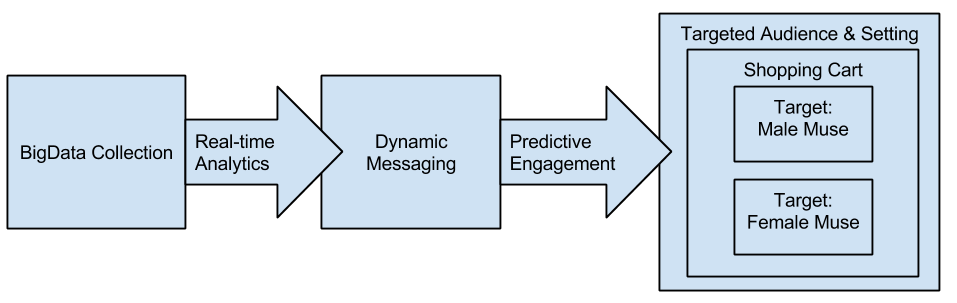

Executive overview
This is our submission for the Skullcandy dataset for the Big Mountain Data Competition. We have taken careful consideration of both the questions posed in the competition documents, the kinds of data we could go after for a POC that would require minimal additional input from Skullcandy, and what we have seen in the way of trends at Skullcandy at large. We think there is a strong case to be made for greater involvement of predictive analytics in supporting Skullcandy’s ecommerce business and in establishing a strong Skullcandy customer electronics brand synonymous with personalized, individual, high-energy, and somewhat irreverent.
Our solution recommends incorporating BigData collection and predictive analytics at various customer touch points:
- Customer satisfaction and follow up surveys that allow for social media data gathering
- Market validation surveys (e.g. buds subscription services) that allow for social media data gathering
- Customer off-website (e.g. social media) engagement that uses dynamic messaging predicted to increase brand loyalty and begin fostering new customers
- Personalized Amazon/ecommerce check-out experience with offers that are a reflection of predicted customer lifetime value
Details regarding the submission
We feel that with any solution that leverages BigData and machine learning (advanced analytics) there is a maturation that takes place in an organization. This maturation is the process of going from being reactive and primarily relying on domain expertise and instincts to leveraging sophisticated analyitics as a distinct competitive advantage. As an organization grows it’s need for sophisticated analytics it usually happens as the organization seeks the answer more and more difficult questions such as those proposed by Harris & Davenport in their book “Competing on Analyitics: The New Science of Winning”:
- Why is this happening? (statistical analysis)
- What if these trends continue? (forecasting)
- What will happen next? (predictive modeling)
- What is the best that can happen? (optimization)
In our proposed solutions we concentrated on how Skullcandy might use advanced analytics to support their growing efforts at creating a brand focused company in addition to being an ecommerce company. We feel that with Skullcandy’s trackrecord in the market-place that they potentially could juggle several facets of their brand image with help from advanced analytics. This would avail them of the option of attacking several target audiences to help Skullcandy establish a brand that is about consumer electronics that are personal, individualized, high-energy, and irreverent.
If Skullcandy were simply a one-dimensional brand focused on say, hip-hop culture, having supportive analytics would be helpful but not crucial to success. But Skullcandy appears to be taking a much more ambitious route: personalization. This does not mean that the Skullcandy’s brand need be dilute, just the opposite. By being about personal taste and by giving customers a way to express themselves Skullcandy could become an extension of each of their customers’ personal image -- potentially a very strong brand.
Digesting and reacting to the information needed to pull this off is a problem ideally situated to be supported by BigData and machine learning analytics.
In our solution we have developed an early POC of how Skullcandy might:
- Use BigData collection to improve and simplify the process of discovering how users perceive and engage with Skullcandy
- Use real-time, predictive, analytics to identify “natural” clusters of users that fit an "archetype" user
- Compare “archetype” users to internal “muses” or target audiences to help dial-in dynamic messaging and placement
- Use predictive analytics to target key audiences in specific situations (e.g. male snowboarder that is a likely customer that just posted about a day on the slopes)
- Use cloud resources to develop a cost effective, production ready, POC for data collection, data processing, and creating real-time responsive engagement from Skullcandy to their target audiences
Summary of Deliverables and Recommendations
Using predictive analytics in establishing Skullcandy's brand and improving the e-commerce experience
To help compare brands and their relationships to dominant target audiences we provide the following dashboard. This dashboard lets you interactively visualize the brand and customer segments. We explain this dashboard in further detail below.
Click here to see live dashboard
Example data collection with a focus on engagement
We recommend using a satisfaction survey or market survey with social login to collect additional information on your core customer base. We built this simple app in Python Django framework to help with the data collection from Twitter.
Click here to see live demo survey app
Example dynamic messaging with predictive social engagement
Example predictive engagement
Last, we suggest a simple but very effective social engagement strategy. During the checkout process, a customer can choose to share their excitement of the purchase with their facebook friends or twitter followers. In doing so we can predict the lifetime value of that customer and provide an immediate incentive. In return we collect additional information about them through increased access to their social data as well as immediate boost in grassroots marketing.
Below is an image of a similar type of engagement already common in Amazon’s checkout process.
Technical overview

The cost of implementation and maintenance for this solution are not fully knowable without further discovery of scope. However, by leveraging Amazon Web Services we were able to put this together with minimal expense (<$100) or time (<40 hrs). A proper POC would likely require significantly more time and investment than this but we feel that it is encouraging to see how inexpensively a useful early POC can be laid out and deployed.
Brand comparision app walkthrough
The app is an interactive tool for exploring relative differences in customer engagement on each of the relevant brands.
Overal brand sentiment
An overall sentiment score is presented over time as computed by the total aggregate of relevant product reviews on Amazon. A similar score can be plotted by scoring relevent tweets or other social feeds over time.
Main social sentiment trend lines over time
It is important to react to and engage with customers and potential customers in their channels. The next section helps sort through the noise to identify key drivers in overall brand sentiment. Sorting and clustering these help identify key trends in products or product categries.
Segmenting customers and competitors' customers
Segmenting your entire customer base helps identify strengths and opportunities. Being able to compare your customer segments to those same segments of your competitors is huge insight. The final section helps you see how your twitter followers overlap with those followers of other key brands.